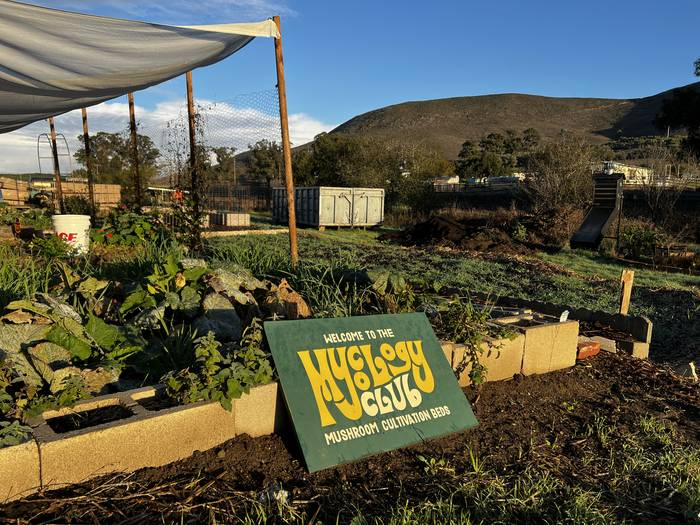
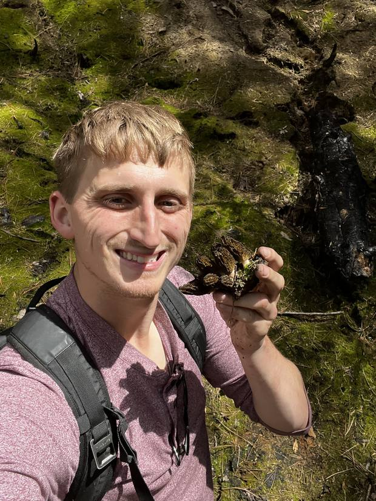
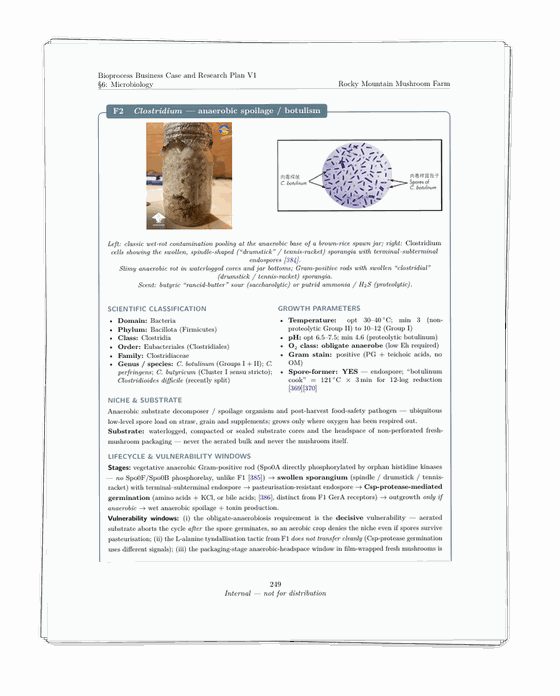

About 6 years ago, a college roommate went back home for a few weeks and left me with some cubes that he was trying to grow for the first time. They were struggling from the start so I watched every Youtube video and scoured subreddits trying to save them. None of them made it, but I ended up getting really fascinated by it all. Like a lot of people I went down the rabbit hole and got immersed in it - for me it was the microbiology at play, the science of the psychedelics and medicinal side, and how things are actually grown agriculturally

A few months after that I ended up reviving a dead mycology club at my college and we setup a lab and growspace and garden giant/plant beds and a greenhouse at a plot of land on campus with the most out of tune piano you will ever hear; we went foraging together and would cook dishes together with what we found - it was a great community with some of the best and most unique people I ever encountered

As an engineer, mushroom cultivation always seemed like an unsolved problem - the raw ingredients to grow something like an oyster mushroom are essentially free, sawdust and soy hulls are ag waste, the cost all comes from the process itself. Gourmet mushrooms aren't culinary staples precisely because they cost so much, most people don't even realize their protein content or know how to cook them well because they end up being a rarity in the average household
I spent the next 5 years or so trying to solve this, probing at the edges with little tests and research to try to find a jump, not just an incremental improvement but something that could really change the cultivation process. I slowly built up a microbiology lab and ran around 5 dozen tests while working - ironically - on contamination control for hypergolic propulsion systems (rocket shit, stable boom is good but dust makes big boom and that's probably bad)
The video below is one of the prettiest of these tests, one of the 6 or so successful runs with an old Bioflo 3000 i fixed up growing a blue oyster mushroom LC. I modified the vessel to be a column airlift to test a low shear, high aeration environment and a custom broth to get some data on mycelial flocculation, cellular viability, and growth rates. Probably the least pretty test was getting covered in cold lime water and straw, then running to the shower. I was trying to pipe cold lime in and out of a 55 gallon drum (that I bought from a man named Trash) for a half-baked pasteurize-in-place system, forgot for the 20th time that things expand when you get them wet, and climbed up on the shelf to try to get the lid on and the whole shelf collapsed and my plumbing shattered when it hit the floor. Fun 2AM activity before work the next day

The microbiology research was by far the largest investment, and through the years wrote a 470 page research paper with a little over 500 sources of backing on microbiology and mycelial enzymatic expression that laid the groundwork for a patent submission earlier this year. Through all of this, I've been narrowing in on an architecture that is far different from current cultivation practices and that I believe will genuinely change the way we grow mushrooms and make them a culinary staple in the US. So now that I've transitioned into finishing up development tests, any and all feedback on your farms would be extremely helpful and I'd love if you were to join me on this journey :)
Mush love,
Joey